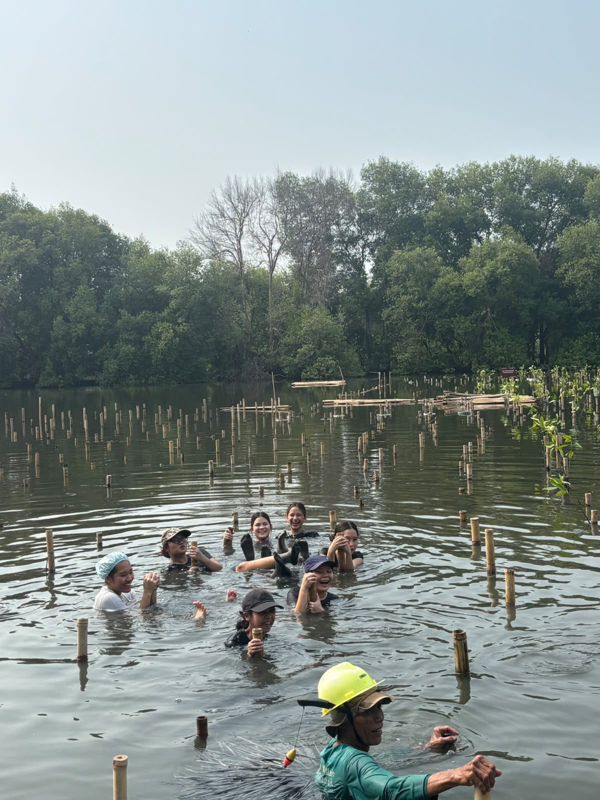

Pancasila bukan hanya tentang nilai yang kita pelajari atau hafalkan, tetapi juga tentang bagaimana kita bersikap dan mengambil tindakan dalam kehidupan sehari-hari. Nilai-nilai di dalamnya sebenarnya sejalan dengan SDGs, yang berusaha menciptakan kehidupan lebih baik bagi manusia sekaligus menjaga bumi. Mulai dari kepedulian terhadap sesama, menghargai hak setiap orang, hingga bekerja sama menghadapi masalah, semuanya bisa menjadi bagian dari pembangunan berkelanjutan. Artinya, mewujudkan SDGs tidak selalu harus dimulai dari hal besar, tetapi juga dari cara kita menerapkan nilai Pancasila dalam kehidupan sehari-hari.
SDG 13 tentang penanganan perubahan iklim dapat diwujudkan melalui nilai gotong royong, kepedulian, dan tanggung jawab yang ada dalam Pancasila. Menjaga lingkungan bukan hanya kepentingan diri sendiri, melainkan juga bentuk kepedulian terhadap orang lain yang ikut merasakan dampak perubahan iklim. Dengan melakukan hal sederhana seperti mengurangi sampah, menghemat energi, dan menjaga lingkungan, kita turut menjalankan nilai Pancasila sekaligus mengambil bagian dalam aksi nyata menghadapi perubahan iklim.
| Sila Pancasila | Hubungan dengan SDG | Contoh Penerapan |
|---|---|---|
| Ketuhanan Yang Maha Esa | Sejalan dengan SDG 16 dalam menciptakan masyarakat yang damai dan toleran terhadap perbedaan agama serta kepercayaan. | Menghormati teman yang memiliki agama berbeda dan tidak memaksakan kepercayaan kepada orang lain. |
| Kemanusiaan yang Adil dan Beradab | Berkaitan dengan SDG 3 dan SDG 5 melalui pemenuhan hak, kesetaraan, kesehatan, dan kesejahteraan manusia | Tidak melakukan diskriminasi, menghargai hak orang lain, dan membantu orang yang membutuhkan. |
| Persatuan Indonesia | Mendukung SDG 13 dan SDG 17 melalui gotong royong, kepedulian terhadap lingkungan, dan kerja sama untuk mencapai tujuan bersama. | Mengikuti kegiatan kerja bakti, menjaga lingkungan, dan bekerja sama tanpa membeda-bedakan latar belakang. |
| Kerakyatan yang Dipimpin oleh Hikmat Kebijaksanaan dalam Permusyawaratan/Perwakilan | Berkaitan dengan SDG 16 melalui partisipasi, pengambilan keputusan yang adil, dan keterlibatan masyarakat. | Mengikuti musyawarah, menghargai pendapat orang lain, dan mengambil keputusan bersama tanpa memaksakan kehendak. |
| Keadilan Sosial bagi Seluruh Rakyat Indonesia | Sejalan dengan SDG 1 dan SDG 10 dalam mengurangi kemiskinan dan kesenjangan serta mewujudkan kesempatan yang setara. | Bersikap adil, berbagi dengan yang membutuhkan, serta tidak membeda-bedakan teman berdasarkan kondisi ekonomi. |

Menanam Mangrove ♡
Saya bisa menerapkan nilai Pancasila dan mendukung SDGs melalui hal-hal sederhana, seperti mengurangi sampah, menghargai perbedaan, dan ikut kegiatan sosial maupun lingkungan. Tidak hanya itu, tetapi saya bisa mengajak teman-teman dan keluarga saya untuk melakukannya bersama. Refleksi saya adalah menyadari bahwa memahami nilai Pancasila saja tidak cukup jika tidak diterapkan dalam kehidupan sehari-hari. Dari pengalaman berorganisasi dan mempelajari SDGs, saya belajar pentingnya tanggung jawab, kerja sama, dan konsistensi dalam memberikan kontribusi, sekecil apa pun.